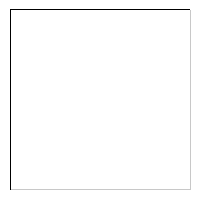
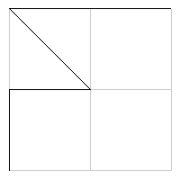
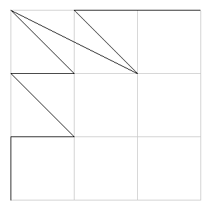
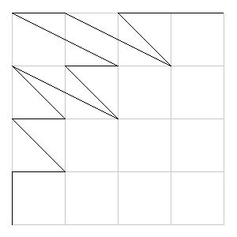
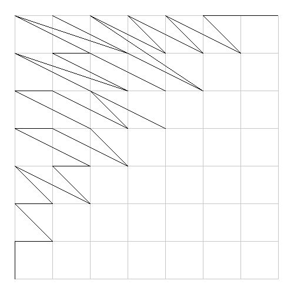
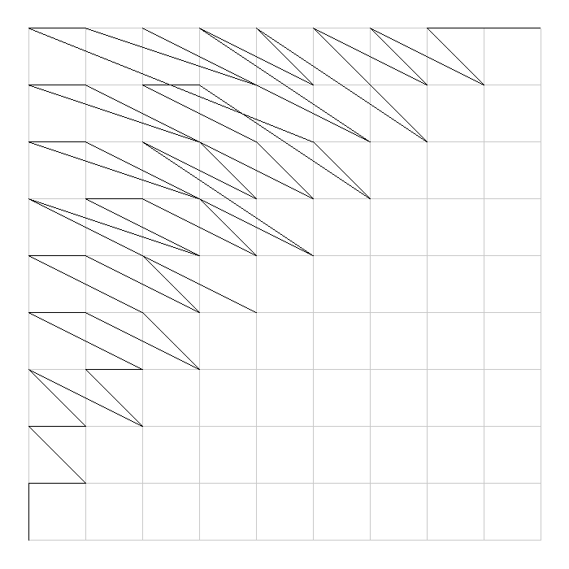
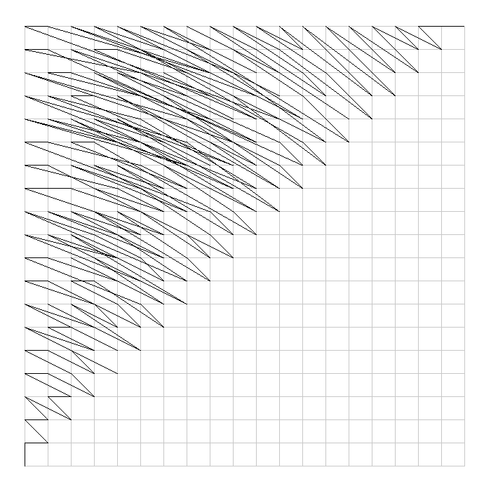

I was curious how it would look like if we traversed the pairs of natural numbers in the sequence of increasing values of x^2 + y^2 (both bounded to be less than or equal to some n), so I made some pictures to help visualize this sequence. Naturally, this sequence is not equivalent to the unbounded case: subject for some later investigation. The origin of the lattices is actually (1,1), x grows to the right and y grows upward. The black line connects the points in the sequence, thus the curve begins at the bottom left corner and finishes at the top right corner. I have only considered pairs with x <= y due to symmetry considerations.







Program was written in C++, takes n the bounding value and s the size of the output image in pixels as arguments. Output is a "P2" PPM image emitted to stdout. Not the most optimized or well written program, it was written quickly for the purposes of investigating this sequence.
#include <iostream>
#include <fstream>
#include <vector>
#include <algorithm>
#include <cmath>
using namespace std;
struct Pair { int a,b; };
bool operator <(Pair p,Pair q) {
return (p.a*p.a+p.b*p.b)<(q.a*q.a+q.b*q.b);
}
class Image {
public:
int w,h;
int *img;
Image(int ww,int hh,int initVal=0) : w(ww),h(hh) {
img=new int[w*h];
for(int i=0;i<w*h;i++) img[i]=initVal;
}
void line(int color,int x1,int y1,int x2,int y2) {
double dx=x2-x1,dy=y2-y1,sx=dx>0?1:-1,sy=dy>0?1:-1;
if(dx==0.0 && dy==0.0) return;
if(abs(dx)>abs(dy)) {
for(double m=dy/dx,y=y1,x=x1,i=0;x!=x2;x+=sx,i++,y=y1+i*sx*m) pixel(x,y)=color;
} else {
for(double m=dx/dy,x=x1,y=y1,i=0;y!=y2;y+=sy,i++,x=x1+i*sy*m) pixel(x,y)=color;
}
}
int& pixel(int x,int y) { return img[(h-y-1)*w+x]; }
int& operator()(int x,int y) { return pixel(x,y); }
int& operator()(int i) { return img[i]; }
~Image() { delete img; }
};
void drawPpm(int s,int n,vector<Pair>& pairs) {
int i,j,k,pad=s/20,ss=(s-2*pad)/(n-1);
int blankColor=255,lineColor=0,gridColor=200;
cout<<"P2 "<<s<<" "<<s<<" 255"<<endl;
Image img(s,s,blankColor);
// grid drawing
for(i=0;i<n;i++) {
img.line(gridColor,pad,pad+i*ss,pad+(n-1)*ss,pad+i*ss);
img.line(gridColor,pad+i*ss,pad,pad+i*ss,pad+(n-1)*ss);
}
// plot drawing
Pair p=pairs[0];
for(Pair q : pairs) {
img.line(lineColor,pad+(p.a-1)*ss,pad+(p.b-1)*ss,pad+(q.a-1)*ss,pad+(q.b-1)*ss);
p=q;
}
// write to file
for(i=0;i<img.w*img.h;i++) cout<<img(i)<<" ";
}
int main(int argc,char *argv[]) {
if(argc!=3) {
cout<<argv[0]<<" n s\n";
}
vector<Pair> pairs;
int i,j,n=max(2,atoi(argv[1])),s=max(200,atoi(argv[2]));
for(i=1;i<=n;i++) {
for(j=i;j<=n;j++) pairs.push_back((Pair){i,j});
}
sort(pairs.begin(),pairs.end());
// for(Pair p : pairs) cout<<"("<<p.a<<","<<p.b<<")"<<endl;
drawPpm(s,n,pairs);
return 0;
}